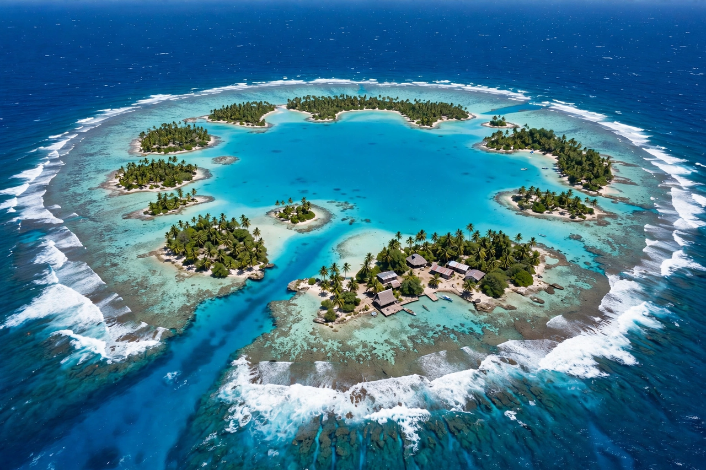

Micronesia
Micronesia is a subregion of Oceania, made up of thousands of small islands and atolls scattered across the western Pacific Ocean. Its name, from Greek mikros ("small") and nesos ("island"), was coined in the 19th century to distinguish its small islands from Polynesia and Melanesia. The region's island groups — the Carolines, Marshalls, Marianas and Gilberts — span four modern states: the Federated States of Micronesia (which takes the region's name), Palau, the Marshall Islands and Kiribati, plus the US territories of Guam and the Northern Mariana Islands.

History
Micronesia was settled by Austronesian seafarers over the last 3,000–4,000 years, navigators who crossed immense distances by star, swell and bird flight. Spain colonised the Marianas from the 1660s with catastrophic population loss; Germany and Japan succeeded as colonial powers, Japan ruling most of the region as a League of Nations mandate between the wars and fortifying it for the Pacific War, whose island-hopping battles (Tarawa, Kwajalein, Peleliu) devastated it. After 1945 the United States administered most of Micronesia as a UN Trust Territory — and used Bikini and Enewetak atolls in the Marshalls for 67 nuclear tests (1946–58), including the 15-megaton Castle Bravo shot of 1954, whose fallout poisoned islanders and a Japanese fishing crew. The Federated States of Micronesia, the Marshall Islands and Palau are now sovereign states in "free association" with the US (defence and aid in exchange for strategic rights), while rising seas threaten the low atolls existentially — the dread that links the region to Kiribati and to global climate politics.